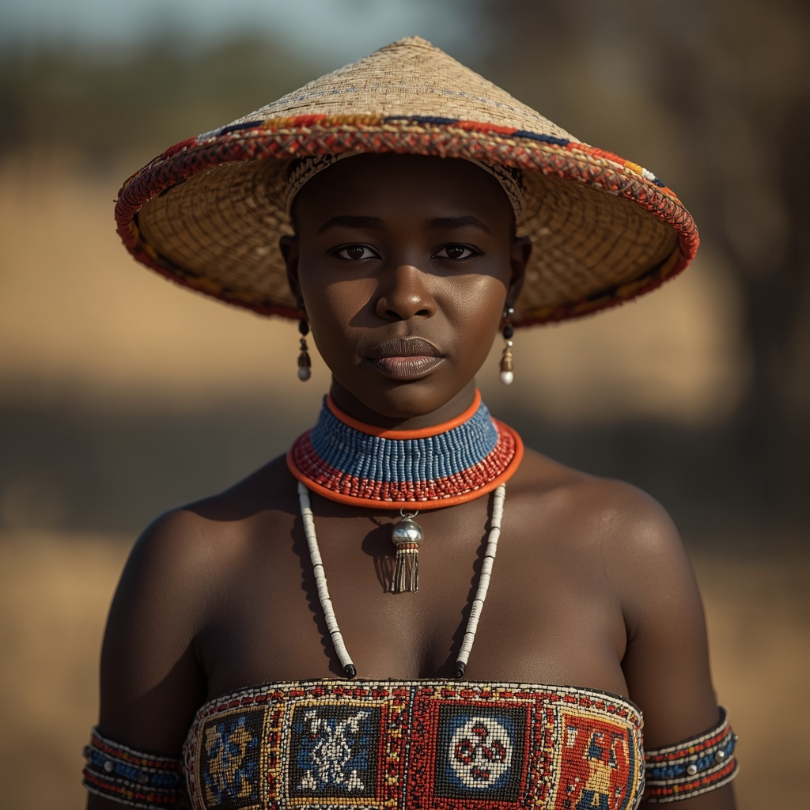

🧑🤝🧑 世界の民族・人びと
People of the World。国境を越えて暮らす人びとを、地域ごとに紹介します。伝統だけでなく、今の暮らしも一緒に。

ズールー
🗣 使用言語
ズールー語、英語
👥 人口の目安
約1,570万人(南アフリカ)
👘 伝統衣装
女性はビーズ刺繍の前掛けやなめし革のスカートを身につけ、既婚女性は特徴的な帽子状の髪飾りを用いる。男性は腰に毛皮の帯を垂らす伝統的な装束を用いる。
🏠 住居
「イクグワネ」と呼ばれる蜂の巣型の草葺き丸小屋に住む伝統がある。
🍲 食文化
とうもろこしの主食(パップ)に肉や豆の煮込みを添える料理が中心で、乳製品も日常的に用いられる。
🎵 音楽・踊り
太鼓と合唱を伴う踊りが盛んで、男性による棒術や勇壮なステップダンスが名誉の証とされる。
🎉 行事・祭り
未婚女性が国王の前で踊る「ウムランガ(リード・ダンス)」や、新しい収穫を祝う「ウクウェシュワマ」などの儀礼が知られる。
🙏 信仰・価値観
多くはキリスト教を信仰するが、祖先崇拝を中心とする伝統的な信仰体系を並行して受け継いでいる人も多い。
📜 歴史
16世紀頃に一族として形成され、19世紀初頭のシャカ王のもとで軍事的に強大な王国となった。1879年の英国とのアングロ・ズールー戦争やアパルトヘイト時代を経て、現在は南アフリカ最大の民族集団として社会に統合されている。
🏙 現代の暮らし
南アフリカ最大の民族集団として都市部・農村部の双方に暮らし、政治・経済・文化のさまざまな分野で活躍している。
🇯🇵 日本との関係
「ライオン・キング」の舞台やアフリカを題材にしたドキュメンタリーなどを通じて、ズールーの踊りや音楽文化に触れる機会が日本でも増えている。
🌍 関連する国

出典: https://en.wikipedia.org/wiki/Zulu_people(2026-09-01時点) / https://ja.wikipedia.org/wiki/%E3%82%BA%E3%83%BC%E3%83%AB%E3%83%BC%E4%BA%BA(2026-09-01時点)